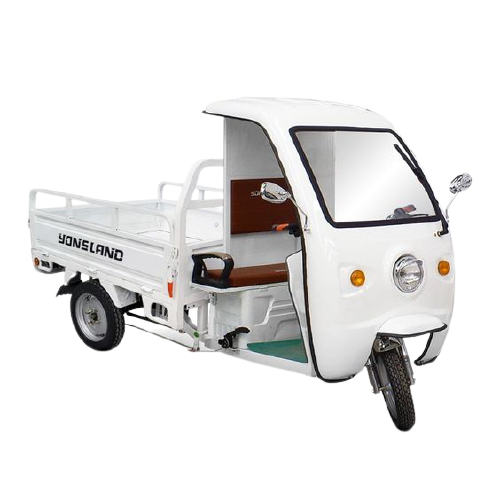
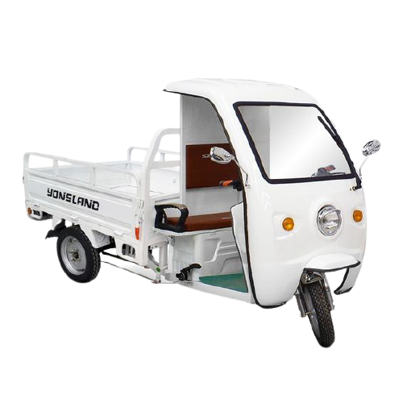

Realizar la pre-revisión del vehículo, en el software indupack, pulsando en el icono crear pre-revisión, el cual está compuesto por 7 pasos: 1. condiciones, 2. cliente vehículo, 3. vehículo, 4. inventario, 5. novedades, 6. llantas-kilometraje 7. Confirmación. Verificar que el vehículo cumpla con las condiciones mínimas para efectuar la inspección, de acuerdo al instructivo ingreso de pre-revisión (dos-i-023).